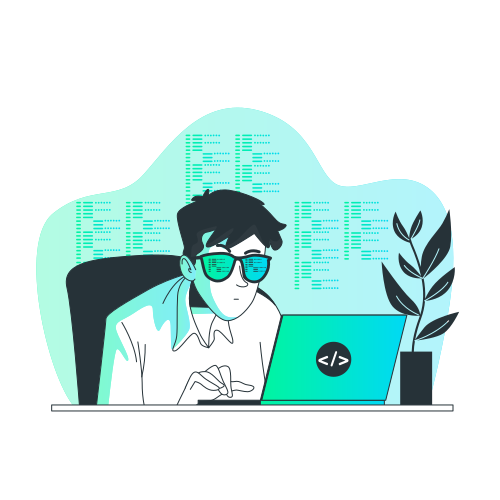

Desenvolvedor Back-End
Pedro Azevedo
Tenho 19 anos e sou um desenvolvedor back-end com 1 ano de experiência como freelancer. Atualmente, estou cursando Ciências da Computação e sou um entusiasta da área de cibersegurança.

Tenho 19 anos e sou um desenvolvedor back-end com 1 ano de experiência como freelancer. Atualmente, estou cursando Ciências da Computação e sou um entusiasta da área de cibersegurança.
Como alguém que sempre foi mais interessado no mundo do back-end, decidi explorar as bases do front-end e me aprofundar no HTML e CSS puros. O resultado foi uma landing page que desenvolvi para uma empresa fictícia de fotografia.
Ao longo do projeto, enfrentei desafios interessantes especialmente ao garantir que a landing page fosse responsiva e oferecesse uma experiência agradável em diversos dispositivos.


Olá! Meu nome é Pedro Azevedo e tenho 19 anos. Sou um estudante de Ciência da Computação apaixonado pelo mundo da tecnologia. Meu foco principal de estudo e desenvolvimento está voltado para a área de back-end, onde busco aprimorar minhas habilidades e conhecimentos constantemente.
Desde que entrei no mundo da programação, fui cativado pela capacidade de criar soluções inovadoras e funcionais. Tenho um interesse especial no desenvolvimento back-end, pois reconheço seu papel fundamental no funcionamento eficiente e seguro de aplicativos e sistemas.
Além disso, sou um entusiasta de cibersegurança. Estar ciente dos desafios e ameaças que existem no mundo digital é fundamental para garantir a proteção de dados e a privacidade dos usuários. Acredito que o conhecimento em segurança cibernética é crucial para o desenvolvimento de sistemas robustos e confiáveis.
Obrigado por visitar meu portfólio e espero ter a oportunidade de trabalhar com você em um futuro próximo!